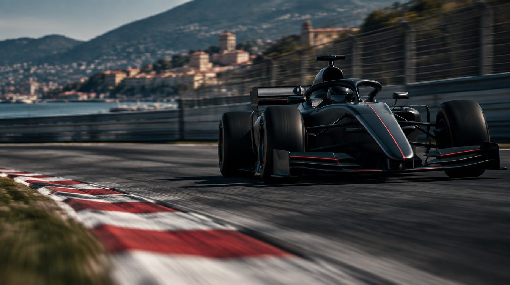
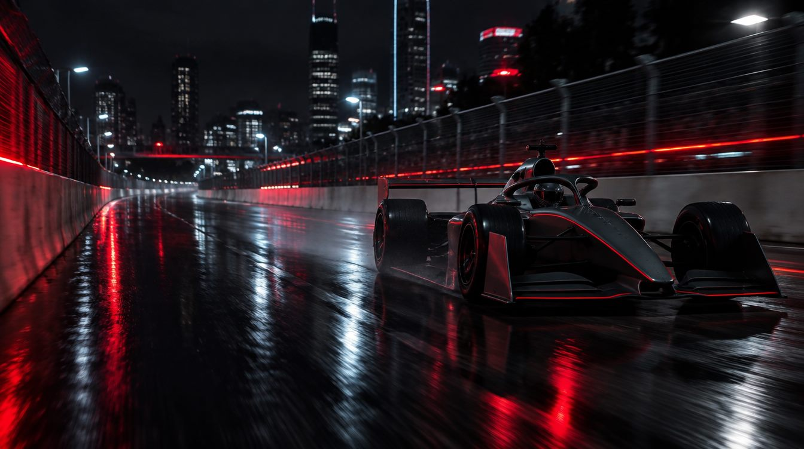
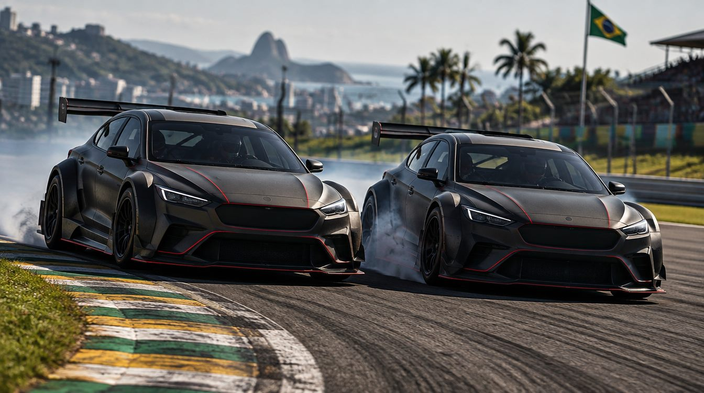
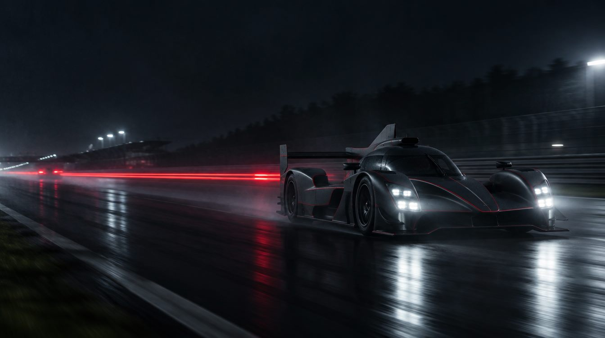
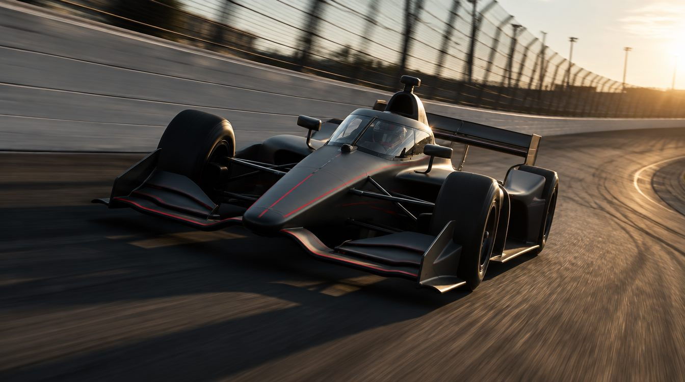
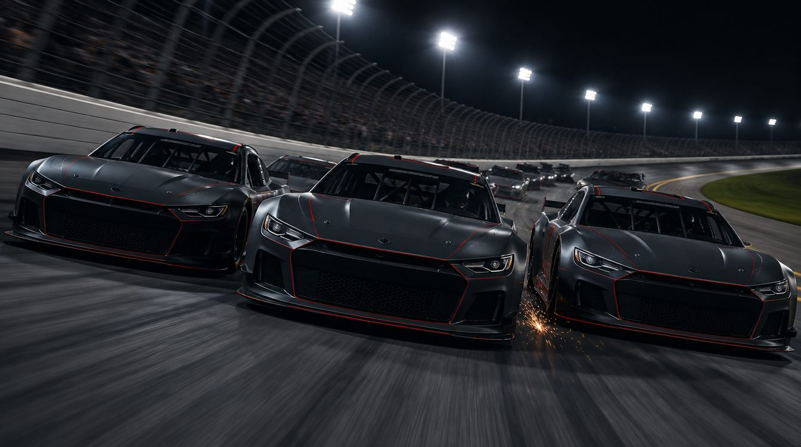

Guia para iniciantes
Doze categorias, cada uma com o seu jeito de correr. Escolha uma e entenda em poucos minutos como é o fim de semana, como se ganha pontos e o que querem dizer as palavras da transmissão.
 Fórmula 1A Fórmula 1 é o campeonato mundial de carros de fórmula, os mais rápidos do mundo em circuito.
Fórmula 1A Fórmula 1 é o campeonato mundial de carros de fórmula, os mais rápidos do mundo em circuito.
Fórmula 2A Fórmula 2 é o último degrau antes da Fórmula 1. Fórmula 3A Fórmula 3 é a categoria de base do caminho para a F1.
Fórmula 3A Fórmula 3 é a categoria de base do caminho para a F1.
Fórmula EA Fórmula E é o mundial de carros de fórmula 100% elétricos.
Stock CarA Stock Car Pro Series é a principal categoria do automobilismo brasileiro. RallyO Mundial de Rali (WRC) não é disputado em autódromo.
RallyO Mundial de Rali (WRC) não é disputado em autódromo.
EnduranceO Mundial de Endurance (WEC) é feito de corridas longas, de 6 a 24 horas.
IndyCarA IndyCar é o principal campeonato de carros de fórmula dos Estados Unidos.- Porsche CupA Porsche Cup Brasil é um campeonato em que todos correm com o mesmo carro, o Porsche 911 GT3 Cup.

NASCARA NASCAR Cup Series é a principal categoria de stock cars dos Estados Unidos. MotocrossO Mundial de Motocross (MXGP) é disputado em pistas de terra com saltos, curvas fechadas e trechos esburacados.
MotocrossO Mundial de Motocross (MXGP) é disputado em pistas de terra com saltos, curvas fechadas e trechos esburacados. MotoGPA MotoGP é o campeonato mundial de motovelocidade.
MotoGPA MotoGP é o campeonato mundial de motovelocidade.
O que cada bandeira quer dizer
Os fiscais de pista usam bandeiras para avisar os pilotos. Estas valem para quase todas as categorias.
- Verde
Pista liberada. A corrida começa ou recomeça.
- Amarela
Perigo à frente. Proibido ultrapassar naquele trecho e é preciso tirar o pé.
- Vermelha
Corrida parada. Todos voltam devagar para os boxes.
- Azul
Um carro mais rápido, que está uma volta à frente, vai passar. O piloto precisa abrir caminho.
- Preta
Piloto desclassificado. Ele precisa ir para os boxes e sair da prova.
- Preta e branca
Advertência por comportamento na pista. É o cartão amarelo do automobilismo.
- Quadriculada
Fim da corrida. O primeiro a recebê-la é o vencedor.